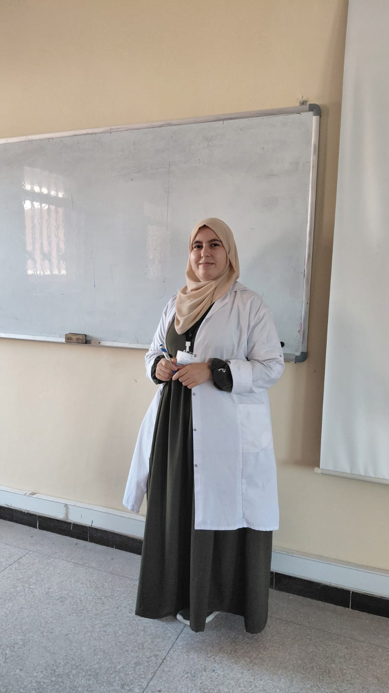

Ouijdane
Louchachha
Du développement web à l'enseignement de l'informatique : un parcours au service de la pédagogie numérique.
Je suis enseignante stagiaire en informatique au CRMEF Ibn Rochd Marrakech-Safi. Ce portfolio retrace mon parcours, mes apprentissages et ma vision de l'enseignement à l'ère du numérique.

Qui suis-je ?
Développeuse web devenue enseignante stagiaire en informatique, je construis progressivement mon identité professionnelle à la croisée de deux univers : la technologie et la pédagogie. Mon parcours m'a appris que transmettre ne consiste pas seulement à expliquer un savoir, mais à créer des situations qui donnent envie d'apprendre, de chercher et de progresser.
Développement Web
WordPress, PHP, HTML/CSS, création de solutions personnalisées pour le web.
Pédagogie Numérique
Intégration des TICE, production didactique et évaluation des apprentissages.
Formation CRMEF
16 modules couvrant les sciences de l'éducation, la didactique et l'informatique.
Stage SMP
Expérience de terrain au Collégial Al Nakhil, 4 phases d'immersion professionnelle.
CRMEF Ibn Rochd
Marrakech-Safi
Dans ce cadre, la formation articule les apports théoriques, les ateliers pratiques, les modules de spécialité, les stages en établissement scolaire et l'analyse réflexive des pratiques. Cette complémentarité permet à l'enseignant stagiaire de passer progressivement d'une posture d'apprenant à une posture de praticien réflexif capable de concevoir, animer, évaluer et améliorer ses pratiques pédagogiques.
Formation professionnelle des enseignants
Développement des compétences pédagogiques
Alternance entre théorie et pratique
Analyse réflexive des pratiques
Préparation au métier d'enseignant
Parcours CRMEF
Seize modules articulés en deux semestres qui tissent ensemble les fils de la pédagogie, de la didactique disciplinaire et des compétences techniques.
Planification
Construire une progression pédagogique cohérente et adaptée aux besoins des apprenants.
Explorer le moduleGestion de classe 1
Principes fondamentaux de gestion, communication et climat d'apprentissage.
Explorer le moduleDidactique
Stratégies d'enseignement adaptées à la nature singulière de l'informatique.
Explorer le moduleSciences de l'Éducation
Apports de la psychologie, sociologie et philosophie pour éclairer la pratique.
Explorer le moduleRenforcement 1
Fondements de l'informatique : architecture, algèbre de Boole, numérique et conversion.
Explorer le moduleRenforcement 2
Outils numériques et programmation : Excel, Word, bases de données, algorithmique, Python.
Explorer le moduleRecherche-action
Analyse et résolution de problèmes pédagogiques par une démarche scientifique.
Explorer le moduleÉvaluation
Concevoir des évaluations diagnostique, formative et sommative vraiment utiles.
Explorer le moduleGestion de classe 2
Prévention des conflits, motivation et accompagnement personnalisé.
Explorer le moduleVie scolaire
Comprendre le fonctionnement et l'organisation de la vie dans l'établissement.
Explorer le moduleLégislation scolaire
Cadre juridique et réglementaire du système éducatif marocain.
Explorer le moduleAnalyse des pratiques
Développer une posture réflexive à partir de situations professionnelles vécues.
Explorer le moduleProduction didactique
Conception de ressources et supports pédagogiques adaptés à l'informatique.
Explorer le moduleDéveloppement Web
Création de sites et applications comme supports et objets d'apprentissage.
Explorer le moduleMes domaines d'expertise
À l'intersection du numérique et de l'éducation, j'ai développé un ensemble de compétences qui dépassent le cadre technique. La maîtrise des technologies, la compréhension des mécanismes d'apprentissage et la capacité d'analyse réflexive constituent aujourd'hui les piliers de mon identité professionnelle en tant que future enseignante d'informatique.
Techniques
Développement web, WordPress, Python, réseaux, bureautique
Pédagogiques
Planification, gestion de classe, didactique, évaluation, TICE
Réflexives
Analyse des pratiques, adaptation, amélioration continue, recherche-action
Pourquoi l'enseignement ?
Développeuse web pendant quatre ans, j'ai découvert que ce qui me passionnait le plus n'était pas seulement de construire des solutions numériques, mais d'expliquer, de transmettre et de voir l'autre comprendre. Chaque projet mené avec un client était une forme de pédagogie : reformuler ses besoins, clarifier des concepts techniques, l'accompagner vers une solution qu'il puisse s'approprier. L'enseignement de l'informatique est l'aboutissement logique de ce parcours — passer de la conception technique à la formation des citoyens numériques, c'est donner aux élèves les clés pour comprendre et agir dans un monde où le code est partout.
Mes valeurs professionnelles
Quatre piliers qui guident ma pratique enseignante au quotidien.
Engagement
Un investissement total dans la réussite de chaque élève, avec la conviction que l'éducation est le levier le plus puissant pour transformer des vies.
Innovation pédagogique
La recherche constante de méthodes et d'outils nouveaux pour rendre l'apprentissage de l'informatique accessible, concret et motivant.
Apprentissage continu
L'humilité de rester apprenant dans un domaine qui évolue chaque jour, pour offrir aux élèves un enseignement actualisé et pertinent.
Bienveillance
Un climat de classe fondé sur la confiance, le respect et l'encouragement, où chaque élève peut oser, se tromper et progresser.
Mon engagement pour l'enseignement
SMP — Collégial Al Nakhil
Le stage au Collège Al Nakhil représente le passage du cadre théorique de la formation vers la réalité vivante de la classe.
Phase 1 Observation
Repérer les gestes pédagogiques, l'organisation de classe, la gestion du temps et les dynamiques d'apprentissage.
Septembre — Octobre 2025Phase 2 Co-animation
Participation progressive aux activités avec l'encadrement du professeur, préparation de supports et interventions guidées.
Octobre — Décembre 2025Phase 3 Animation autonome
Préparation et présentation autonome de séances d'informatique, conception d'activités et évaluation des acquis.
Janvier — Mars 2026Phase 4 Réflexivité
Analyse des pratiques observées et vécues, identification des forces et axes d'amélioration pour enrichir la posture professionnelle.
Mars — Mai 2026Une vision globale
Ce portfolio rassemble les principales dimensions de ma formation professionnelle : les modules suivis au CRMEF, les expériences vécues en stage et les réflexions qui accompagnent la construction de mon identité professionnelle.
Formation CRMEF
16 modules répartis sur deux semestres : pédagogie, didactique de l'informatique, TICE, sciences de l'éducation et renforcements techniques.
Découvrir la formationStage en milieu professionnel
Une immersion progressive au Collégial Al Nakhil : observation, co-animation, animation autonome et analyse réflexive des pratiques.
Explorer le SMPProductions et réflexions
Un parcours atypique du développement web à l'enseignement, des compétences techniques aux compétences pédagogiques et réflexives.
Voir le profil